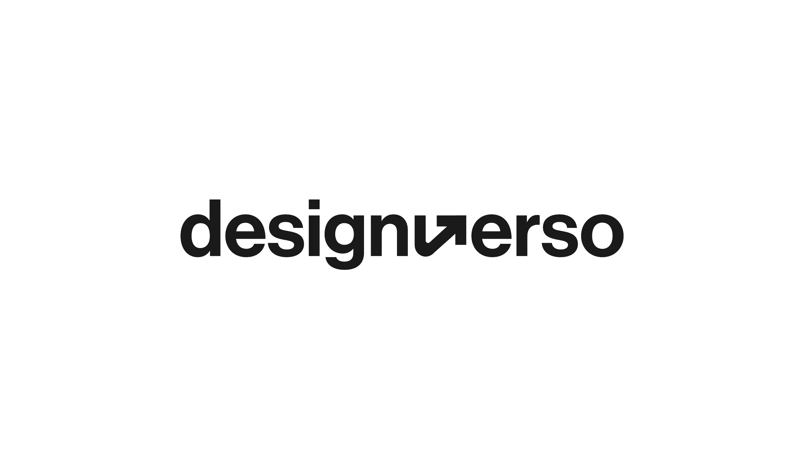
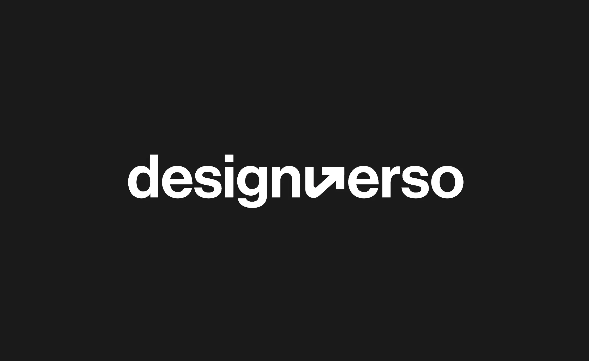
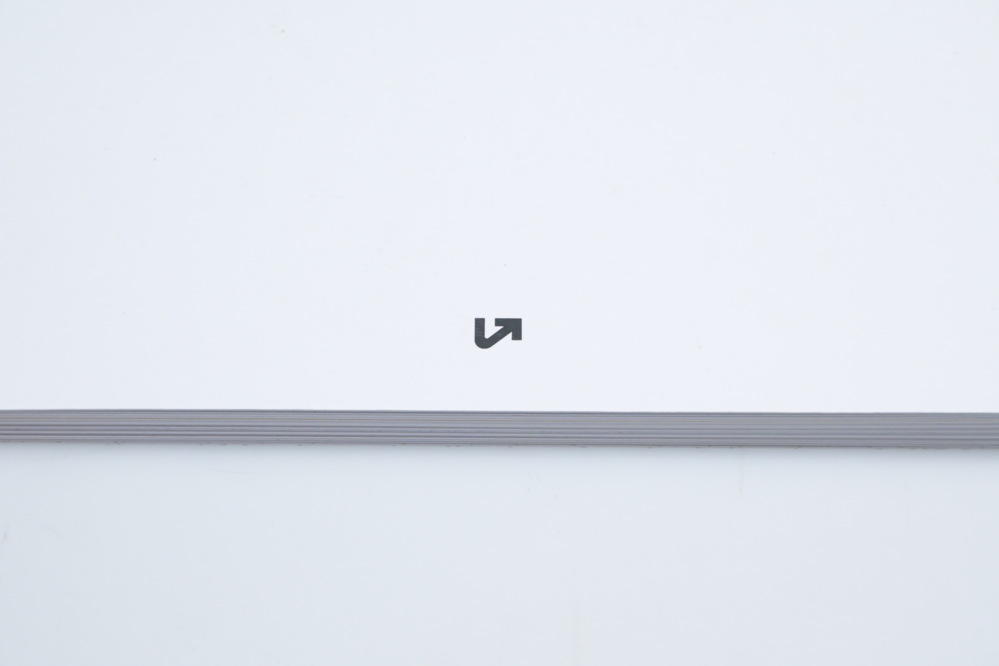
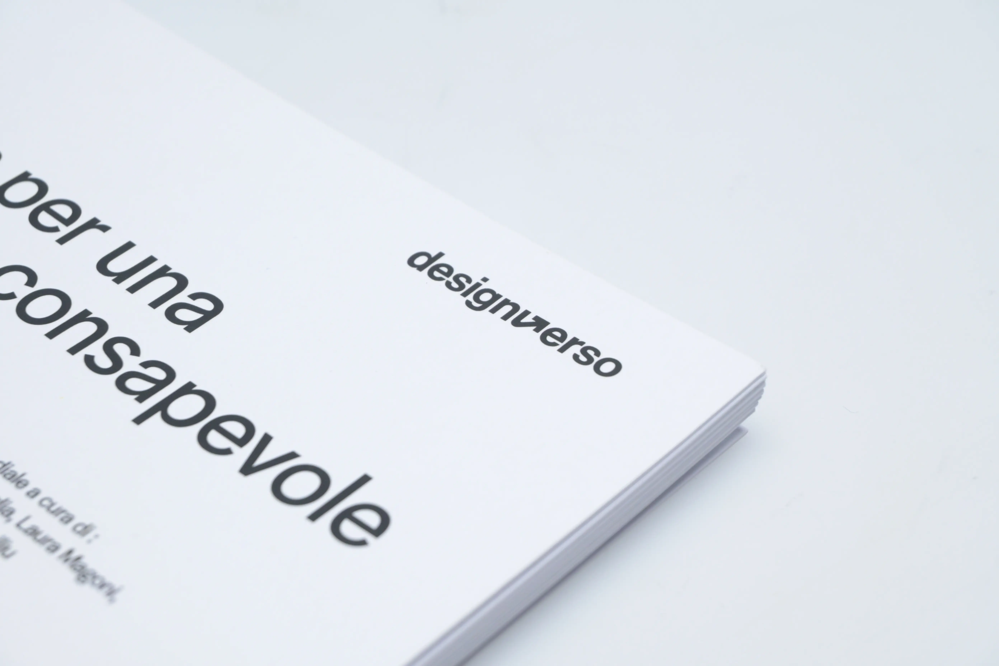

Design Verso is the logo selected for the 2025 edition of the Editorial Graphics Workshop at the Politecnico di Milano. The project began as a proposal for the course’s visual identity and, following an internal competition among the students, my design was chosen as the official logo for the year. The graphic symbol was used as a common signature on all the editorial products produced during the workshop.




The design process focused on creating a brand that could represent the course in a clear and minimalist way. I developed a logo that plays on the concept of ‘Verso’, understood both as a direction and as the physical element of the book, seeking a visual synthesis that would be appropriate for the academic and professional context of the Politecnico.
Following the contest win, the logo was used as an identifying element for all the publications produced by the course in 2025. The challenge was to create a versatile graphic symbol capable of appearing on various publications and supporting materials without overshadowing the specific content of each individual work, whilst ensuring a sense of common identity across the entire year’s output.
The result is a functional brand that has accompanied the entire workshop’s activities. The experience allowed me to tackle a real-world brief and see my work applied in practice to a series of physical and digital editorial projects, fulfilling the task of identifying the 2025 edition of Design Verso.